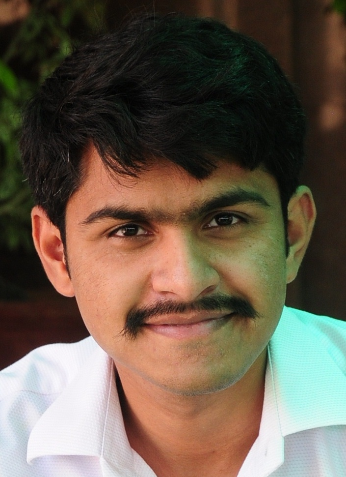

| NUST EME College Rawalpindi | MS in Computer Engineering (CGPA: 3.00/4.00) |
2011-Thesis in progress |
| NUST SEECS Islamabad | BE in Electronics Engineering (CGPA: 2.39/4.00) |
2006-2010 |
| Superior College, Lahore | HSSC (75.45%) | 2004-2006 |
| Divisional Public School, Lahore | SSC (77%) | 2004 |
Compressed sensing, super resolution, image segmentation, multi resolution analysis, filter bank theory, harmonic analysis (Fourier & wavelet domain processing)
Final Year Project: “Implementation of an IP based communication system for providing value added services using Asterisk PBX”. The provided services included interactive voice response (IVR), call conferencing, voicemail, presence call routing.
Semester Projects:
Software Tools:Matlab Xilinx ISE Microsoft Office (Visio, Word, Excel & PowerPoint)
Languages: Matlab C++Verilog HDL Asterisk Extension Language (AEL)HTML
Operating systems: I have worked in both Linux (Ubuntu) & Windows environments